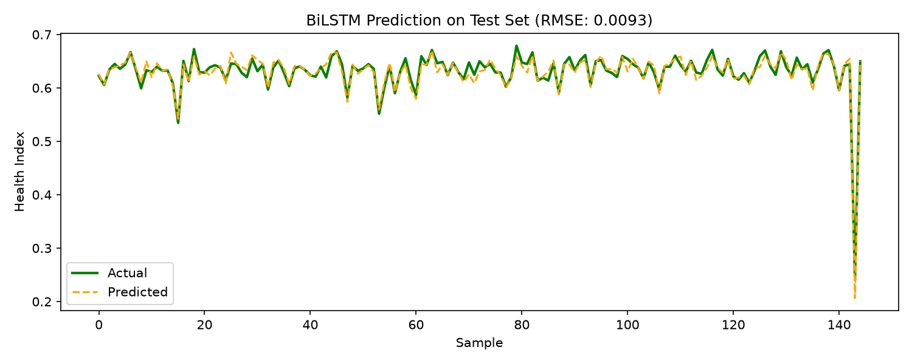

1 ผลของโมเดลนี้
↔️ BiLSTM Bidirectional RNN 🥉 อันดับ 3 จาก 4
0.0093
RMSE ↓
0.0069
MAE ↓
0.9751
Pearson r ↑
0.9441
R² ↑
106K
Parameters
95
Epochs ที่เทรนจริง
วัดบน test set 145 ตัวอย่างที่โมเดลไม่เคยเห็น · RMSE สูงกว่าอันดับ 1 (LSTM) อยู่ 16.1%
RMSE คิดเป็น 2.1% ของช่วง Health Index ทั้งหมด (0.438)
RMSE คิดเป็น 2.1% ของช่วง Health Index ทั้งหมด (0.438)
🧪 เทียบกับ baseline ที่ไม่ต้องเรียนรู้อะไรเลย
Health Index ใน test set กระจุกตัวสูงมาก — 70% ของตัวอย่างอยู่ในช่วง ±0.02 รอบค่ากลาง ดังนั้นแค่ ทายค่าเฉลี่ยเท่ากันทุกครั้ง ก็ได้ RMSE 0.0393 แล้ว
โมเดลนี้ทำได้ 0.0093 — ดีกว่า baseline อยู่ 76% (ตรงกับค่า R² = 0.9441)
ตัวเลข RMSE ที่ดูน้อยมากจึงต้องอ่านคู่กับบรรทัดนี้เสมอ ไม่ใช่อ่านลอย ๆ
Health Index ใน test set กระจุกตัวสูงมาก — 70% ของตัวอย่างอยู่ในช่วง ±0.02 รอบค่ากลาง ดังนั้นแค่ ทายค่าเฉลี่ยเท่ากันทุกครั้ง ก็ได้ RMSE 0.0393 แล้ว
โมเดลนี้ทำได้ 0.0093 — ดีกว่า baseline อยู่ 76% (ตรงกับค่า R² = 0.9441)
ตัวเลข RMSE ที่ดูน้อยมากจึงต้องอ่านคู่กับบรรทัดนี้เสมอ ไม่ใช่อ่านลอย ๆ
2 สถาปัตยกรรม
🧱 โครงสร้างทีละชั้น
Input(B, 20, 56)
20 timestep x 56 features
↓
BiLSTM(64 x 2 ทิศทาง)(B, 20, 128)
อ่านไปข้างหน้า + ย้อนกลับ
↓
BiLSTM(32 x 2 ทิศทาง)(B, 20, 64)
ชั้นที่สอง
↓
Last timestep(B, 64)
รวม forward + backward
↓
FC(32) → ReLU → FC(1) → Sigmoid(B,)
Health Index ∈ (0, 1)
💡 แนวคิดเบื้องหลัง
อ่าน sequence ทั้งสองทิศทาง ทำให้ทุก timestep เห็น context ทั้งก่อนและหลัง ภายในหน้าต่าง 20 timestep เหมาะกับการประเมินสภาพย้อนหลังจากข้อมูลที่บันทึกไว้แล้ว
✅ ข้อดี
- เห็น context สองทิศทางภายในหน้าต่างเดียวกัน
- hidden size เล็กแต่ได้ representation กว้าง
- รักษา temporal resolution ครบ ไม่มี pooling
⚠️ ข้อจำกัด
- ใช้ข้อมูลอนาคตภายในหน้าต่าง → ทำ real-time forecasting ตรง ๆ ไม่ได้
- เทรนช้ากว่า LSTM ธรรมดาเพราะคำนวณสองทิศทาง
3 การเทรน
📉 Loss ต่อ epoch
แกน Y เป็น log scale — ถ้าเส้น train ลงเรื่อย ๆ แต่ val เริ่มเชิดขึ้น แปลว่าเริ่ม overfit
⚙️ รายละเอียดการเทรน
| รายการ | ค่า |
|---|---|
| Epochs ที่เทรนจริง | 95 (สูงสุด 100) |
| หยุดด้วย Early stopping | ใช่ (val loss ไม่ดีขึ้นติดกัน 15 epoch) |
| Val loss ต่ำสุด | 0.000087 |
| เวลาเทรนรวม | 19.3 วินาที |
| เวลาต่อ epoch | 0.20 วินาที |
| จำนวนพารามิเตอร์ | 106,049 |
| Loss function | MSE |
| Optimizer | AdamW (lr 5e-4, wd 1e-4) |
| LR schedule | CosineAnnealing → 1e-5 |
| Gradient clipping | max_norm = 1.0 |
เก็บ checkpoint ที่ val loss ต่ำสุด แล้วโหลดกลับมาวัดผลบน test set
→ ตัวเลข test ไม่เคยถูกใช้เลือกโมเดล
4 ผลการทำนายบน Test Set
📈 ค่าจริง vs ค่าที่ทำนาย
เรียงตัวอย่างตามค่า Health Index จริงจากมากไปน้อย (เพราะ test set ถูกสุ่มลำดับ)
เส้นทำนายยิ่งทาบเส้นจริงยิ่งดี
🎯 Scatter: จริง vs ทำนาย
📊 การกระจายของ Error
🔎 ดู error ละเอียด
| สถิติของ |error| | ค่า | ความหมาย |
|---|---|---|
| Median (P50) | 0.0052 | ครึ่งหนึ่งของตัวอย่างพลาดน้อยกว่านี้ |
| P90 | 0.0158 | 90% พลาดน้อยกว่านี้ |
| P95 | 0.0202 | 95% พลาดน้อยกว่านี้ |
| Max | 0.0343 | ตัวอย่างที่พลาดหนักที่สุด |
| Bias เฉลี่ย | -0.00109 | ทำนายต่ำกว่าค่าจริงโดยเฉลี่ย |
อ่านยังไง
ถ้า RMSE (0.0093) สูงกว่า MAE (0.0069) มาก แปลว่ามีตัวอย่างส่วนน้อยที่พลาดหนักและดึงค่าเฉลี่ยขึ้น — ดูได้จากหางขวาของกราฟการกระจาย error
ถ้า RMSE (0.0093) สูงกว่า MAE (0.0069) มาก แปลว่ามีตัวอย่างส่วนน้อยที่พลาดหนักและดึงค่าเฉลี่ยขึ้น — ดูได้จากหางขวาของกราฟการกระจาย error
Bias บอกอะไร
ค่าบวก = โมเดลมองโลกในแง่ดีเกินจริง (ทำนายว่าสุขภาพดีกว่าความเป็นจริง) ซึ่งอันตรายกว่าในงานบำรุงรักษา เพราะอาจพลาดสัญญาณเตือน
ค่าบวก = โมเดลมองโลกในแง่ดีเกินจริง (ทำนายว่าสุขภาพดีกว่าความเป็นจริง) ซึ่งอันตรายกว่าในงานบำรุงรักษา เพราะอาจพลาดสัญญาณเตือน
🖼️ กราฟจากสคริปต์เทรน (matplotlib)

5 ยืนอยู่ตรงไหนเทียบกับโมเดลอื่น
🏁 อันดับทั้งหมด
| อันดับ | Model | RMSE ↓ | MAE ↓ | Pearson r ↑ |
|---|---|---|---|---|
| 🥇 | LSTM | 0.0080 | 0.0062 | 0.9805 |
| 🥈 | Transformer | 0.0085 | 0.0064 | 0.9800 |
| 🥉 | BiLSTM ← หน้านี้ | 0.0093 | 0.0069 | 0.9751 |
| #4 | CNN-LSTM | 0.0097 | 0.0072 | 0.9744 |
RMSE สูงกว่าอันดับ 1 (LSTM) อยู่ 16.1% ·
ดูหน้าเปรียบเทียบเต็ม →